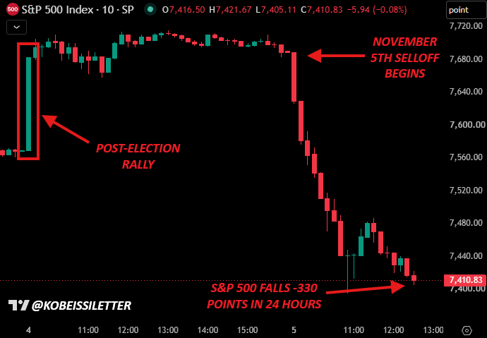
Today's chart is for the history books.
Yesterday's post-election rally now looks like a rounding error in the S&P 500.
The S&P 500 has now erased -$3 trillion today.
That's -$750 billion per hour since the market opened.
Every time the Radical Left, the Fake News, and the professional panic class have written President Trump’s obituary, they have been wrong. They will be wrong again.
In the final two years of his presidency, Democrats will try — and fail — to reverse everything President Trump has done:
Reopen the border after he secured it. Raise taxes after he cut them and delivered record growth. Weaken law enforcement after he produced the largest drop in violent crime in modern history. Flood the country with illegal aliens after he enforced mass deportations at scale. Resurrect the Green New Deal after he achieved American energy independence. Surrender energy dominance after he achieved record production. Restore transgender mutilization on minors after he ended the barbaric practice and protected kids. Reinstate race-based DEI after he eliminated it. Rebuild the censorship regime after he dismantled it. Reopen the floodgates of waste, fraud, and abuse after he cracked down on it. Shield criminal illegals after he prioritized their removal. Pack the Supreme Court after he appointed originalist justices. Launch another impeachment hoax after he swiftly beat back the first two failed efforts.
These efforts will fail; the American people have already rejected this agenda. President Trump’s record is a contrast they cannot erase: border security, the end of DEI, energy independence, the protection of our kids, and much more. Attempts to impeach him, claw back his agenda, or reverse the gains of his Administration will meet the same fate as the Radical Left’s previous attempts: failure.
President Trump will never stop fighting.
🚨BREAKING: Nvidia CEO Jensen Huang has been called before Congress on Nov 18 for a closed-door briefing regarding his relationship with alleged Chinese intelligence asset Alice Huang…
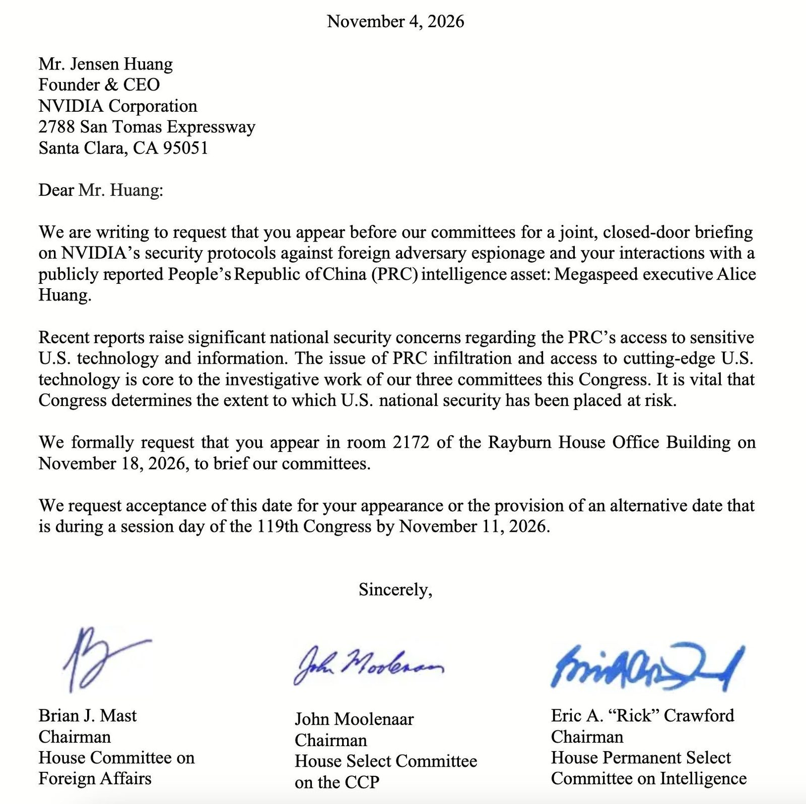
The American people have made their voices heard.
The 120th Congress will officially be the GAYEST Congress in history! (that we know of)
Let's get to work 🇺🇸🏳️🌈🏳️⚧️
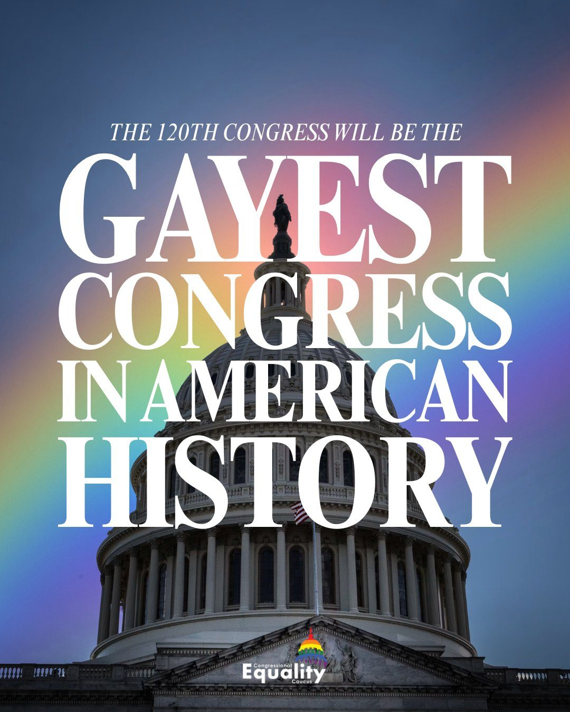
Defense contractor Lockheed Martin agrees to pay $29.5 million to settle claims it discriminated against White employees.
Follow: @AFpost
The Muslim Brotherhood’s official website is celebrating Abdul El-Sayed’s victory in Michigan.
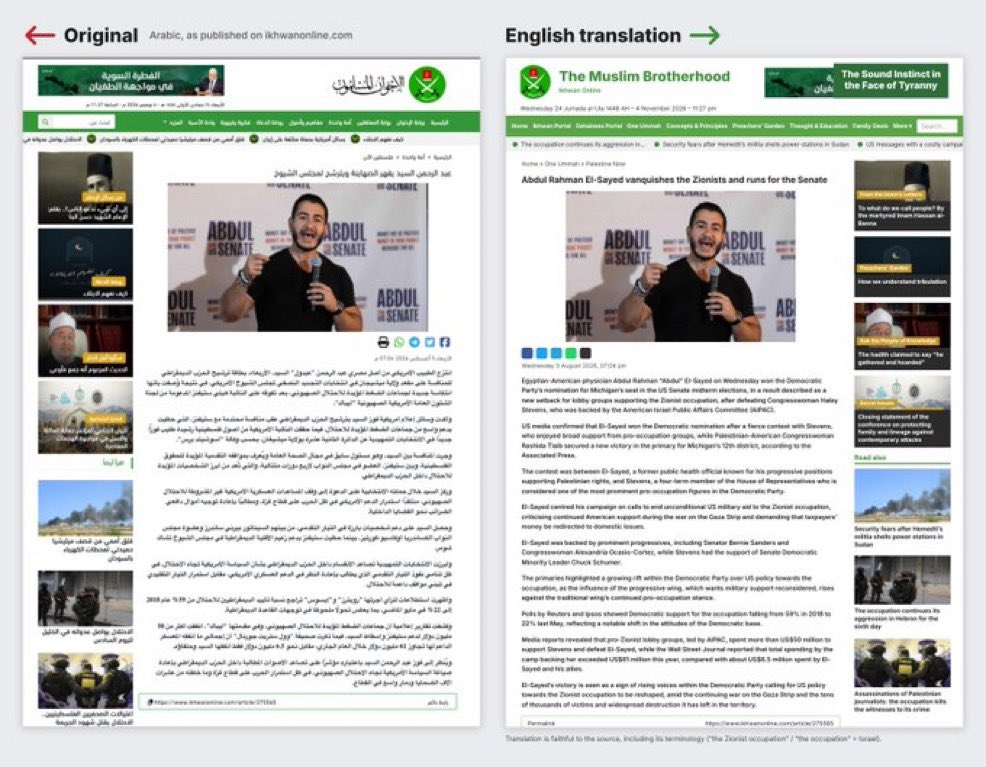
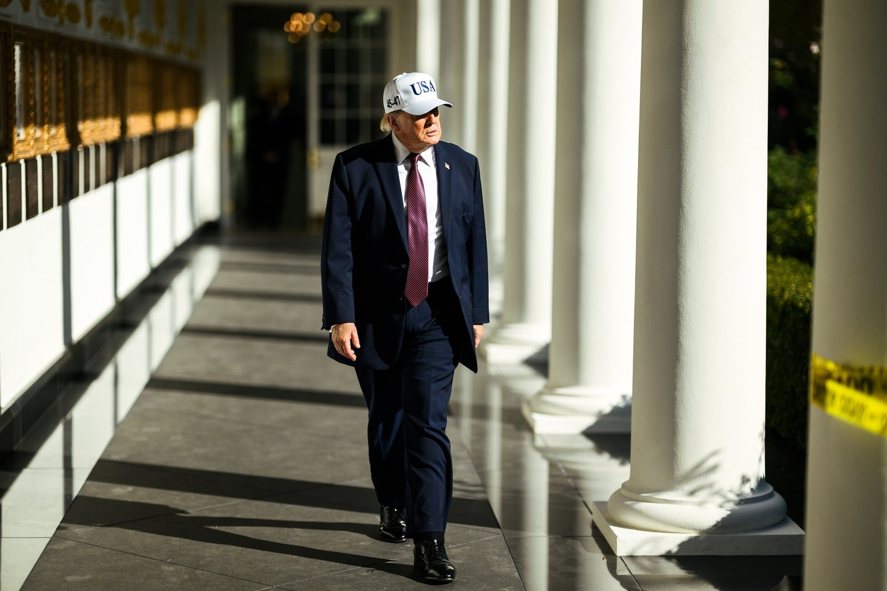
Congratulations, Abdul El-Sayed.
You turned that inshallah into alhamdulillah.
I am overwhelmed with gratitude knowing that we will now have 8 Muslims serving in Congress.
They told us we couldn't speak up, couldn't challenge the status quo, and couldn't make it this far. But we did.
Alhamdulillah.
Oh.
Today, we released the National Policy for Nucleic Acid Synthesis Screening to protect American biotechnology innovation while reducing the risk of misuse.
This policy establishes a new, government-wide screening requirements for synthetic DNA and the equipment used to make it. It will ensure companies selling nucleic acid sequences and synthesis equipment know their customers and prevent the malicious use of these materials and tools.
This policy strengthens our Nation’s biosecurity posture by establishing rigorous U.S. government-wide procurement screening and physical security standards for synthetic biology. It replaces outdated “self-attestation” systems with robust, independent verification. It creates a dynamic, SI-powered screening layer that assesses the biological risk from nucleic acid sequences, allowing the U.S. to anticipate and prevent malicious use and help stop dangerous gain-of-function research.
@NIST will issue rigorous new screening standards and @HHSGov and @USDA will certify synthetic biology providers. Together, these measures will strengthen American biosecurity, safeguard responsible innovation, and establish a global standard for safe and transparent synthetic biology tools and research.
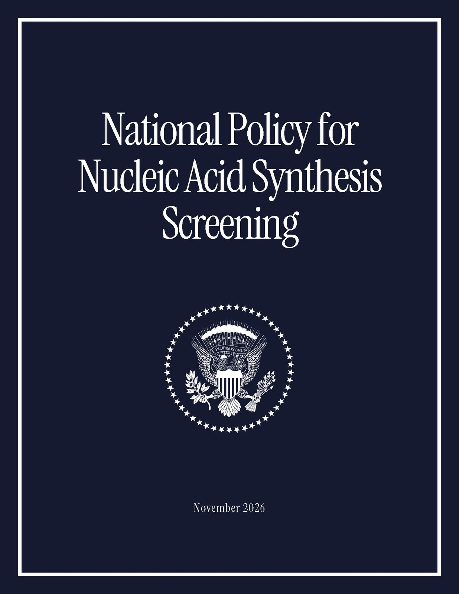
DOJ LAUNCHES SUPER INTELLIGENCE TASK FORCE ⬇️
@POTUS Trump has made clear that “America stands at the forefront of a new technological revolution in intelligence,” and the Department will be a leader in safeguarding against malicious SI actors.
“The SI Task Force at the Department of Justice will facilitate our partnership with SI Force Chair Jay Clayton as we ensure critical SI technologies serve the American people and are not manipulated by bad actors at home or abroad. The Department of Justice will continue identifying and prosecuting individuals whose use of SI violates the law, including by maliciously targeting American taxpayers, critical U.S. infrastructure, or other aspects of our national security.” -@AGToddBlanche
Read more about the DOJ-SITF here:
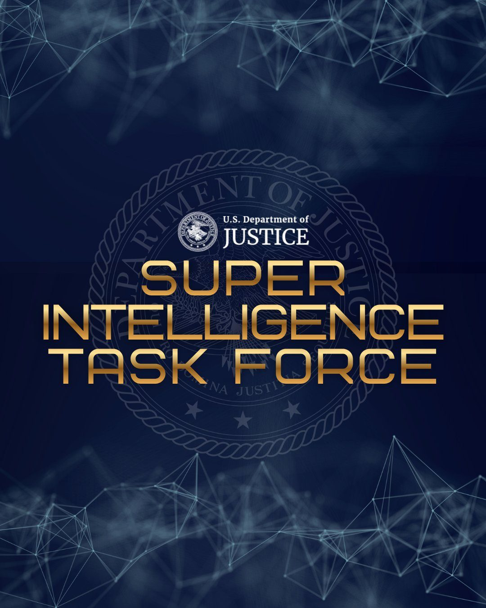
Banks have a long history of driving innovation to serve their customers. The OCC’s supervisory framework on SI is an important milestone for the financial industry as it continues to innovate responsibly. The OCC will continue to encourage safety, soundness, and innovation through a technology-neutral approach.
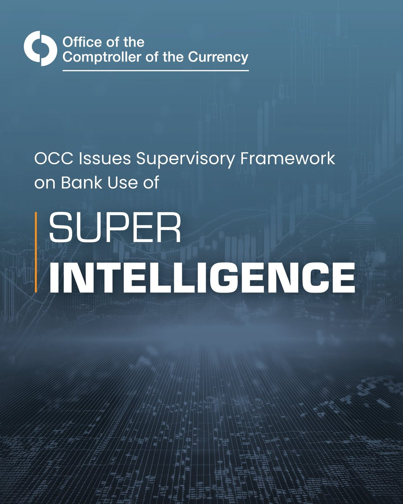
Our security researchers built an autonomous cyber vulnerability discovery, exploitation, and patching pipeline.
In a single run with an upcoming cyber model, it validated and generated patches for 948 local privilege escalation vulnerabilities in the Linux kernel at a total API cost of $1.2 million.
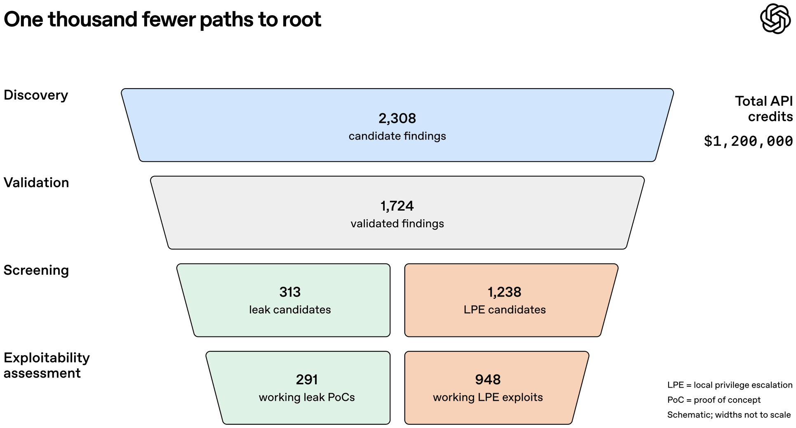
BREAKING: NASA makes U.S. history with first-ever quantum link established between an aircraft & the ground.
Tech Stocks in Bear Market Territory:
1. SanDisk, $SNDK: -66% 2. Arm Holdings, $ARM: -64% 3. Coinbase, $COIN: -63% 4. Nebius, $NBIS: -62% 5. Seagate, $STX: -60% 6. Marvell Technology, $MRVL: -59% 7. ServiceNow, $NOW: -57% 8. Oracle, $ORCL: -56% 9. AppLovin, $APP: -54% 10. Circle, $CRCL: -54% 11. Super Micro Computer, $SMCI: -51% 12. Micron, $MU: -48% 13. Dell, $DELL: -47% 14. SpaceX, $SPCX: -47% 15. Qualcomm, $QCOM: -43% 16. Broadcom, $AVGO: -41% 17. AMD, $AMD: -39% 18. Robinhood, $HOOD: -38% 19. Alphabet, $GOOGL: -32% 20. Tesla, $TSLA: -32% 21. Palantir, $PLTR: -28% 22. TSMC, $TSM: -28% 23. Meta, $META: -26% 24. CrowdStrike, $CRWD: -26% 25. Nvidia, $NVDA: -25%
The S&P 500 has now erased -$4 trillion in market cap since October 6th.
BREAKING: The S&P 500 has now erased -$2.2 trillion over the last 55 minutes.
Today's decline is now double the size of yesterday's post-election rally.
The Nasdaq 100 is ~6% away from a bear market.
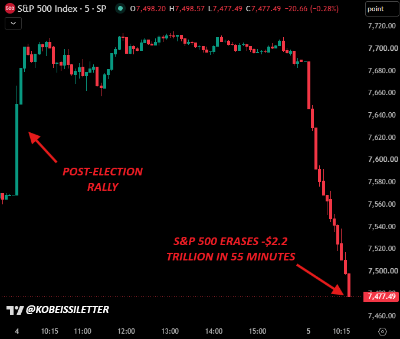
Under @POTUS’s leadership, the Working Families Tax Cuts permanently renewed and strengthened Opportunity Zones, giving investors, entrepreneurs, and local leaders the long-term certainty they need to commit capital to communities that have been overlooked for too long. Today’s announcement of the new designations will help direct private investment to these communities, expand economic opportunity, support job creation, and unlock long-term growth in these communities across the country.
JUST IN: 🇺🇸 US stock market loses $2.3 trillion in the first hour of trading today.
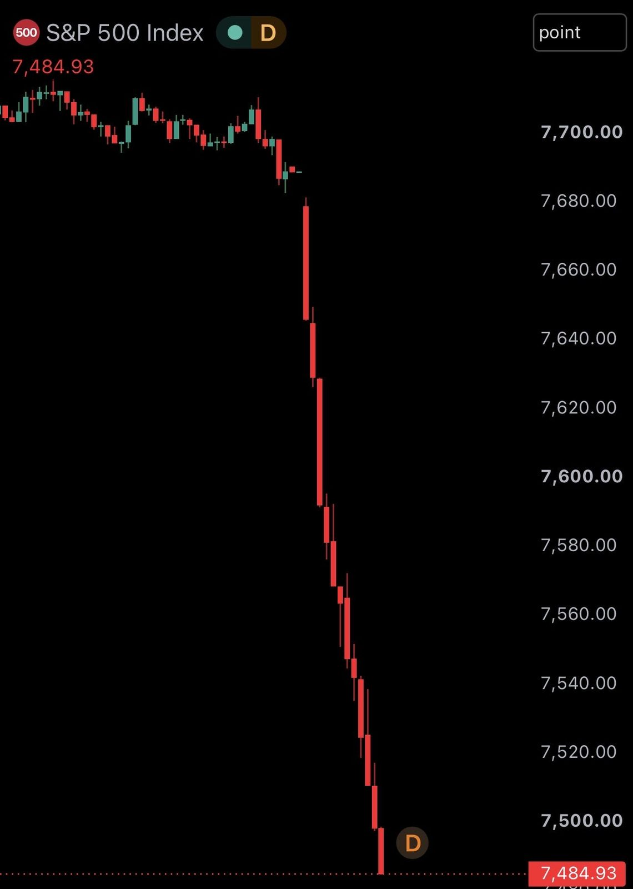
BREAKING: 🇺🇸 Over $3 trillion erased from the US stock market today.
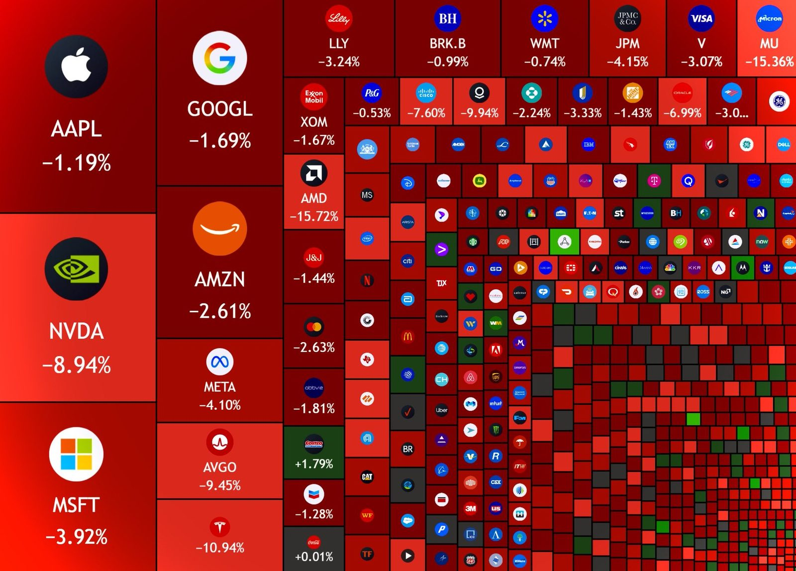
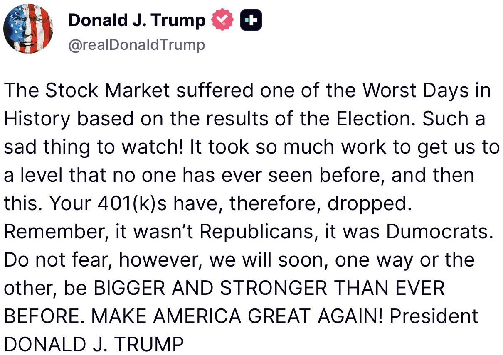
BREAKING: $3,000,000,000,000.00+ wiped from the U.S. stock market today — more than Russia's entire annual GDP.
JUST IN: Nvidia erases all stock market gains this year
The rate at which individuals with IQs below 90 (the US average is around 98) completed college has increased approximately 6-fold in men and 10-fold in women relative to rates in the previous generation.
Today, the average college student isn't all that much smarter than the average American. A degree from most colleges signals little more than what a high school diploma signaled 100 years ago.
It's worth noting that the position of the Democratic Party has been that college enrollment should be expanded, and most of the progressive wing of the party believes that college education ought to be subsidized by the taxpayer. In fact, college enrollment should be reduced and hundreds of non-selective colleges should be shuttered.
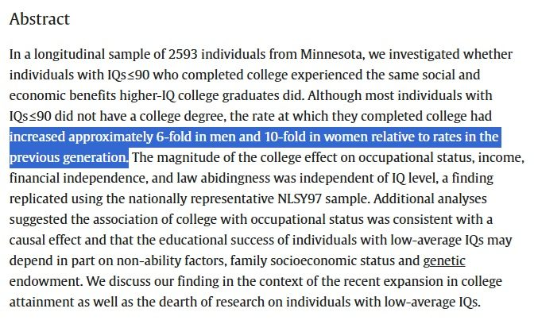
Two 19-year-old Tulane University sophomores discovered a previously unknown muscle attachment deep in the human hip during a routine cadaver lab session — a find so unusual that even their professor, a co-editor-in-chief of Gray's Anatomy, couldn't identify it.
Dominic Roy and Cooper Bruce had been assigned to measure the fusion point between two well-known hip muscles when Roy spotted something unfamiliar on the other side of the iliac fascia.
After an exhaustive search through medical literature and textbooks turned up nothing, the team confirmed it was a new anatomical discovery. The findings were recently published in the journal Clinical Anatomy.
Full story here
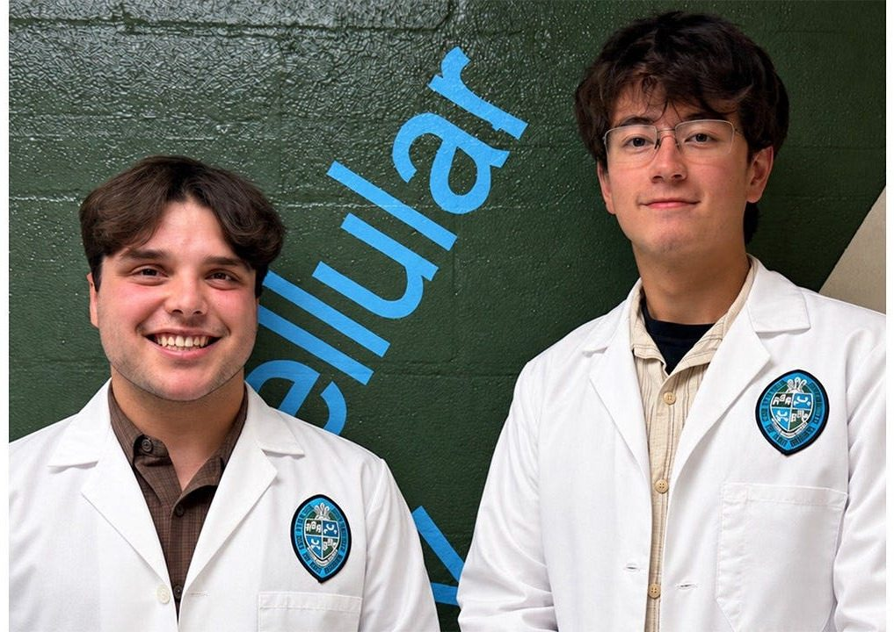
There are now 2,763 law enforcement agreements with ICE through the 287(g) program.
More than 2,000 agencies now have a Task Force Model agreement with ICE to arrest illegal aliens in their area for the first time. This is the largest-ever deputization for mass deportations.
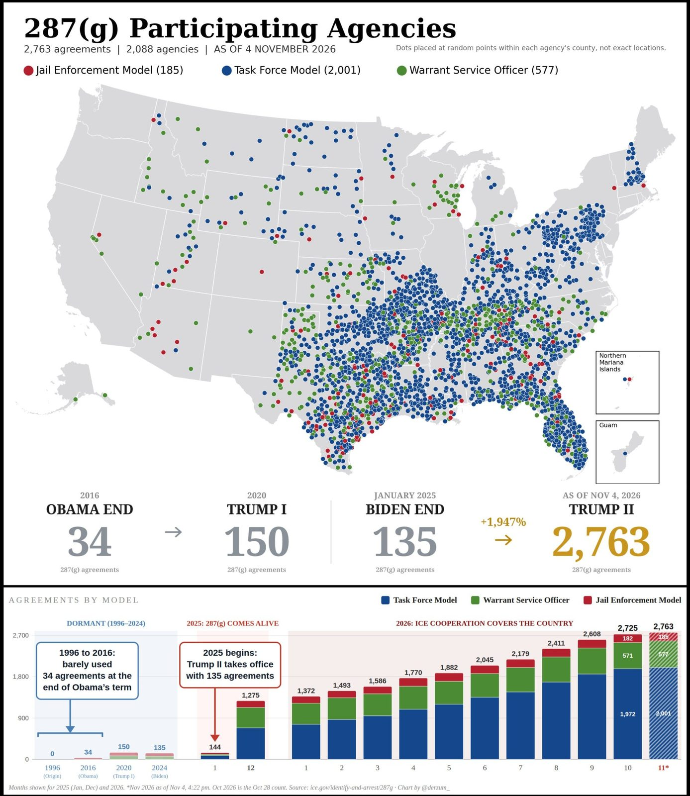
The United States will not tolerate subversive communist networks in our hemisphere.
The Marxist Cuban regime relies on a web of state-owned enterprises, joint ventures, and offshore intermediaries to keep its systems running, and its foreign backers supply the military equipment that helps sustain the regime’s military forces and enables persistent threats to the American homeland.
Today, I'm sanctioning eight entities and two individuals associated with the regime’s financial and shipping network, state-owned import and technical-support entities, and China-based suppliers of the regime's military forces.
BREAKING: California Gov. Gavin Newsom has commuted the death sentences of all 548 people on the state’s death row to life without parole, in the largest mass commutation in modern U.S. history.
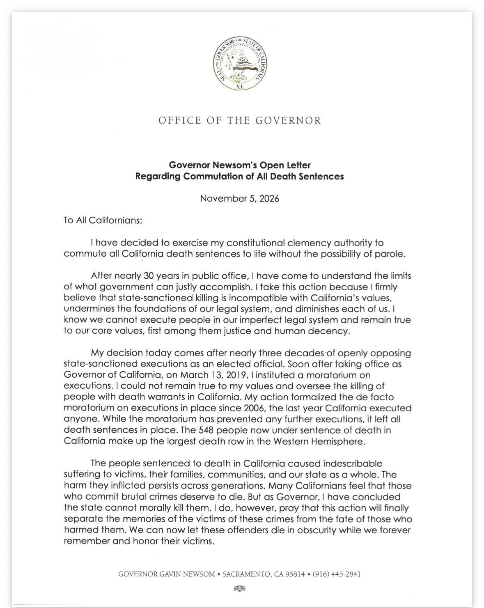
JUST IN: Bank serving an estimated 60% of Paraguay's adult population collapses, sparking protests as millions of customers lose access to their savings.
#BREAKING: French bank Crédit Mutuel Arkéa confirms cyberattack transferred funds from its own account, with losses around $133 million.
BREAKING: Peruvian airport authorities seize 3,000 tarantula spiders hidden inside passengers' luggage on a flight bound for Germany.
JUST IN: 🇵🇾 Bank holding savings for half of Paraguay's population collapses.
NEW YORK POST: First lady Melania Trump called Thursday for a full peace deal between Ukraine and Russia as she hosted negotiators at the White House on Thursday, the first time such a meeting has taken place as the war nears the end of its fifth year.
JUST IN: Trump meets with Putin's envoy Kirill Dmitriev at the White House, teasing a "big agreement" that could involve all of Europe.